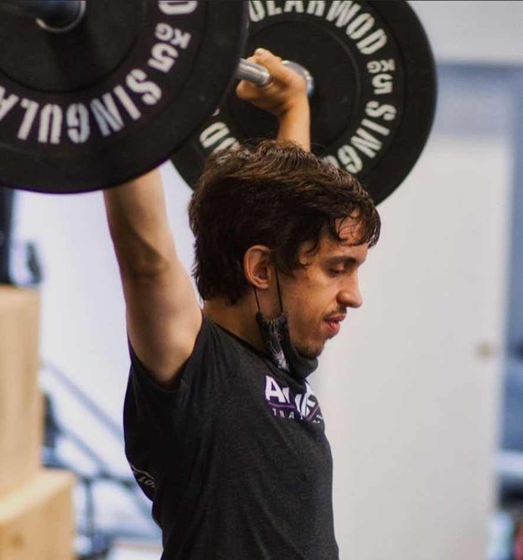
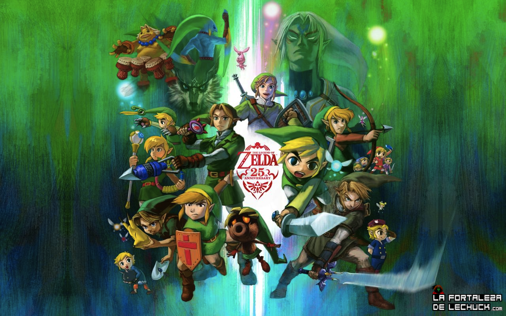
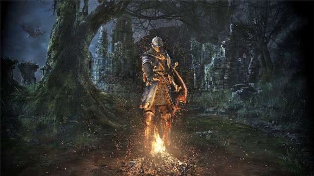

Aficciones
En esta pagina web sera una breve explicacion de mis aficciones
Deportes
Crossfit
El CrossFit es una técnica de entrenamiento que conecta movimientos de diferentes disciplinas, tales como la halterofilia, el entrenamiento metabólico o el gimnástico. Consiste en acometer un programa de ejercicios (flexiones, tracción, etc), en un tiempo determinado y con un número definido de veces.
Esta noción tiene como principio mantener intacta la motivación de los deportistas a largo plazo. Se puede realizar de manera individual o en grupo, y las sesiones suelen ser cortas, variadas y adaptables en función del nivel de cada participante.
El creador del CrossFit, Greg Glassman ha diseñado varios grupos, unos bautizados con nombres de mujeres en referencia a los huracanes americanos, y otros con nombres de héroes militares, policías, o bomberos, entre otros, como homenaje.
Existen también otros grupos que no tienen nombre, simplemente la descripción de los ejercicios. El tiempo de ejecución de cada grupo puede variar, desde solo 5 minutos hasta casi 30 minutos, sin contar el calentamiento y la vuelta a la calma (estiramiento).
Weightlifting

La halterofilia o levantamiento de pesas es un deporte que consiste en el levantamiento del máximo peso posible en una barra en cuyos extremos se fijan varios discos, que son los que determinan el peso final que se levanta. A dicho conjunto se denomina haltera.
Existen dos modalidades de competición: arrancada y dos tiempos o envión. En la primera de ellas se trata de levantar las pesas, de una vez y sin interrupción, desde el suelo hasta la total extensión de los brazos sobre la cabeza. En la segunda se ha de conseguir lo mismo, pero se hace una interrupción del movimiento cuando la barra se halla a la altura de los hombros.
Se desarrolló en Europa durante el siglo XIX, aunque tiene antecedentes en épocas anteriores. En 1905 se fundó la Federación Internacional de Halterofilia, que regula este deporte.
La halterofilia formó parte de los deportes olímpicos en los Juegos Olímpicos de Atenas 1896 y en los de Saint Louis 1904. Aunque desapareció en 1908, se reincorporó en los juegos de Amberes 1920. La categoría femenina no entró en el programa hasta los Juegos Olímpicos de Sídney 2000.
Games Of The Consoles
The Legend Of Zelda

Es una serie de videojuegos de acción-aventura creada por los diseñadores japoneses Shigeru Miyamoto y Takashi Tezuka, y desarrollada por Nintendo, empresa que también se encarga de su distribución internacional.
Su trama por lo general describe las heroicas aventuras del joven guerrero Link, que debe enfrentarse a peligros y resolver acertijos para ayudar a la Princesa Zelda a derrotar a Ganondorf y salvar su hogar, el reino de Hyrule.
A partir del lanzamiento del primer juego en 1986, The Legend of Zelda ha logrado una notable popularidad acompañada de críticas favorables en la industria de los videojuegos, traducidas en un cuantioso éxito comercial a nivel internacional —hasta abril de 2020 se calculan más de 113 millones de copias vendidas de sus juegos; para las ventas específicas de cada título de la franquicia, véase la sección Comercial.
La continuidad cronológica de los juegos ha sido objeto de debate con el transcurso del tiempo,45 debido a la incertidumbre en la identificación de los vínculos entre ciertos títulos.1 Nintendo publicó la cronología definitiva de The Legend of Zelda en el libro Hyrule Historia (2011), en la cual se explica que existen tres líneas de tiempo diferentes, las cuales dependen primordialmente de Link.
Dark Soul

Es un videojuego de rol de acción, desarrollado por la empresa From Software para las plataformas PlayStation 3, PlayStation 4, Xbox 360 y Microsoft Windows, distribuido por Namco Bandai Games.
Anteriormente conocido como Project Souls, es el segundo videojuego de la serie Souls.
Su lanzamiento fue el 22 de septiembre de 2011 en Japón, 4 de octubre en Norteamérica, 6 de octubre de 2011 en Australasia y 7 de octubre de 2011 en Europa.
El 24 de agosto de 2012, se lanzó la edición Prepare to Die para PC, presentando contenido adicional previamente inaccesible para los usuarios de PlayStation 3 y Xbox 360.
El 23 de octubre de 2012, el contenido adicional de la versión PC fue publicado como contenido descargable para consolas bajo el título Artorias of the Abyss.
Dark Souls tiene lugar en el reino ficticio de Lordran.
Los jugadores toman el papel de un personaje humano no-muerto que ha sido elegido para realizar un peregrinaje para descubrir el destino de los no muertos.
El argumento de Dark Souls se va contando fundamentalmente a través de descripciones de objetos del juego, y diálogos con personajes no jugables (PNJs).
Los jugadores deben ir reuniendo pistas para poder entender la historia. Dark Souls se labró un gran reconocimiento por su extenuante dificultad e implacable desafío.
El mundo de juego está lleno de armas, armaduras y objetos consumibles que tienen como objetivo ayudar al jugador durante su viaje.
Formulario
Nombre:
Apellidos:
Telefono:
Mensaje:
Enviar
Borrar